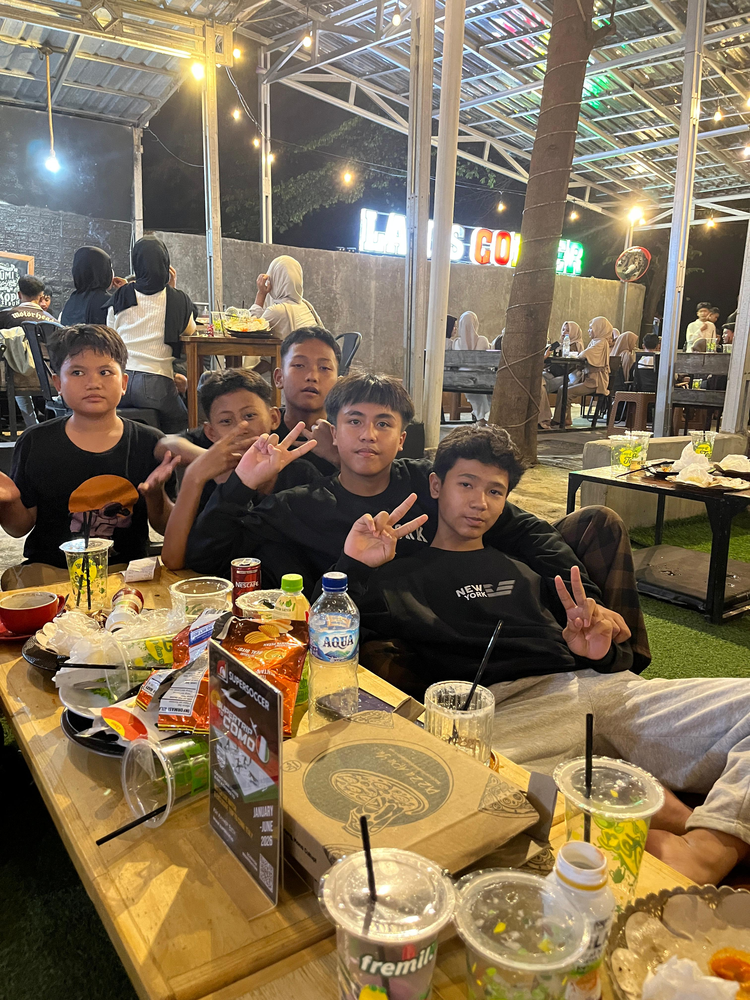
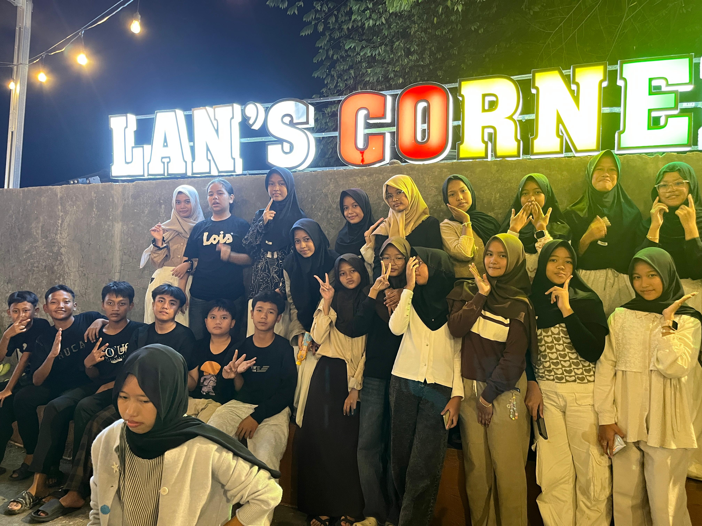
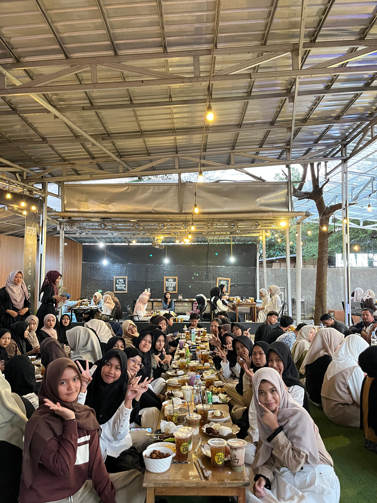
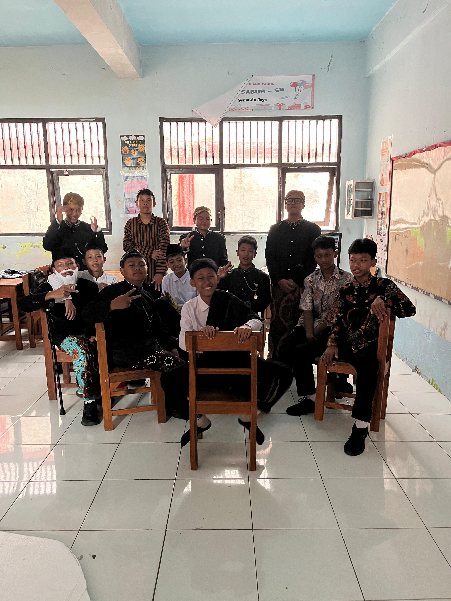
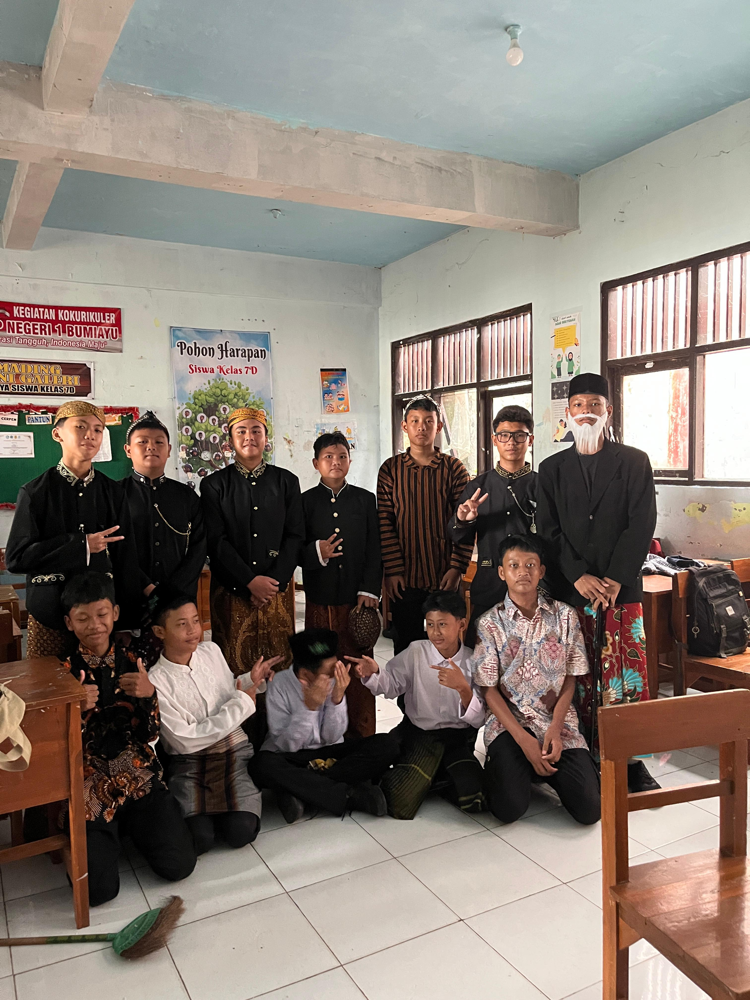
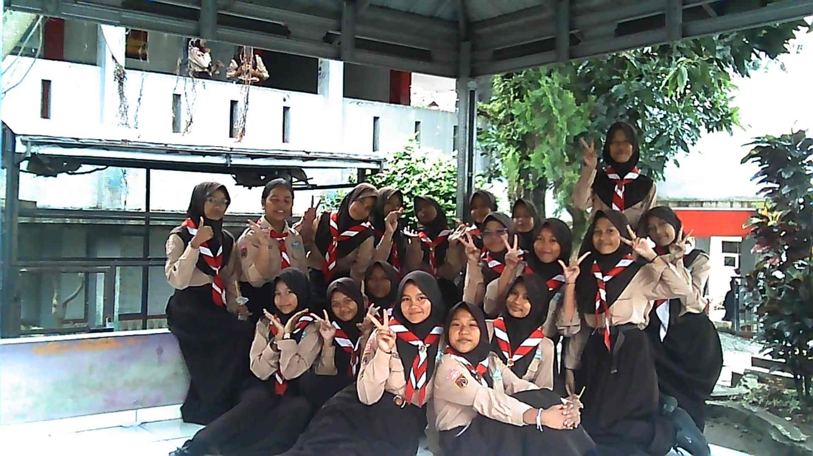
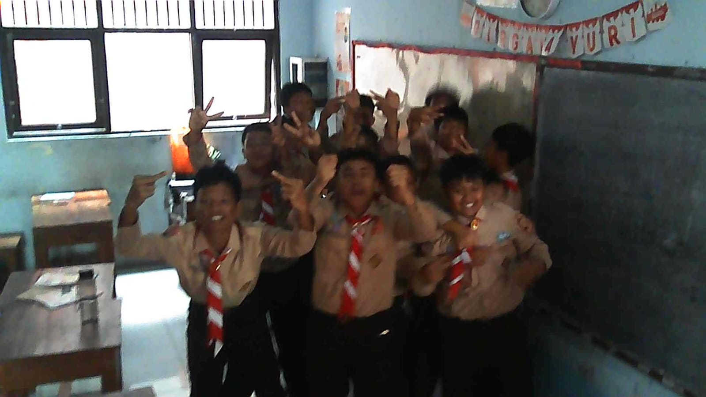
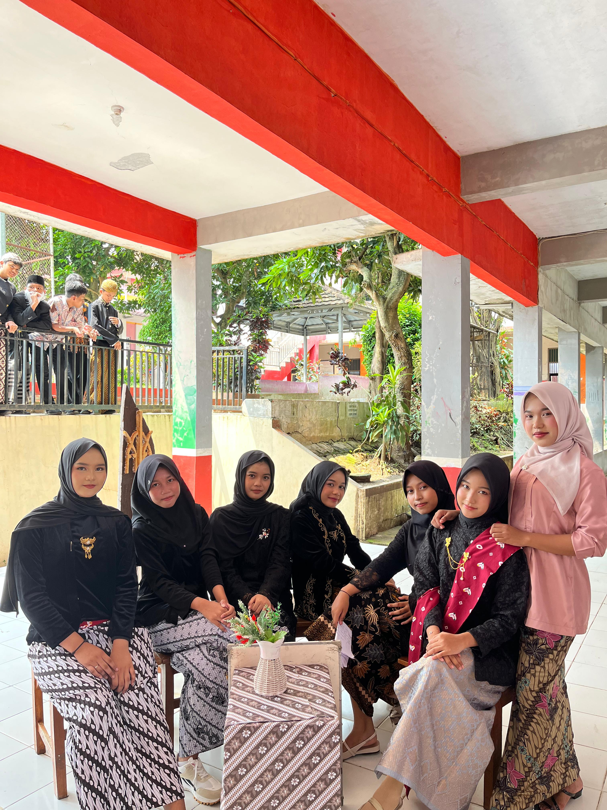

bukber di Lan's Concer'.

Foto-Foto Di Lan's Corner

Bukber Di Lan's Corner (makan-makan)

Foto Foto Dikelas Pas Hari kartini

Foto Bersama Sebelum Ikut Lomba Teaterical Hari Kartini

Momen waktu senggang, foto-foto di Gazebo pake digicam

Foto-Foto pake digicam lagi

Sesudah ikut Teaterical